Overview
scFastDE provides fast, donor-weighted pseudo-bulk differential expression for multi-donor single-cell RNA-seq experiments.
Standard pseudo-bulk DE tools (DESeq2, edgeR, muscat) have three common problems that scFastDE addresses:
- Speed — existing tools loop over genes serially; scFastDE tests all genes simultaneously via vectorised sparse matrix operations (10–50x faster on 30k+ gene datasets)
-
Donor weighting — all donors are treated equally regardless of cell count; scFastDE weights each sample by
sqrt(n_cells), giving principled influence to well-represented donors without discarding sparse ones -
Paired designs — naively aggregating by donor in a paired study (same donors in ctrl + stim) mixes conditions together, destroying the signal; scFastDE auto-detects paired designs and aggregates per donor × condition, then uses a
~ 0 + condition + donorblocking model

Key features
- Auto-detect paired vs unpaired — no user configuration needed; scFastDE inspects the data and picks the right model automatically
- Sparse pseudo-bulk guard — donors with too few cells are removed before aggregation, preventing noisy profiles from inflating false positives
-
Bioc-native —
SingleCellExperimentin,FDEResultS4 out; results slot into any standard Bioconductor workflow
Quick start
Unpaired design
Each donor belongs to exactly one condition (e.g. healthy vs disease).
library(scFastDE)
# Step 1: remove donors with too few cells per cell type
sce <- filterSparseDonors(sce, donor = "donor",
cell_type = "cell_type", min_cells = 10)
# Step 2: run DE — auto-detects unpaired, uses ~ 0 + condition
result <- fastDE(sce,
donor = "donor",
cell_type = "cell_type",
condition = "disease",
target_type = "CD4_Tcell")
# Step 3: inspect
head(deTable(result))
# Step 4: visualise
plotDEResults(result)Paired design
Same donors contribute cells under multiple conditions (e.g. ctrl + stim). scFastDE detects this automatically — no extra arguments needed.
# fastDE sees that donors appear in both conditions and switches to:
# - pseudo-bulk per donor × condition (16 samples for 8 donors × 2 conditions)
# - design: ~ 0 + condition + donor (blocks on donor)
result <- fastDE(sce,
donor = "donor",
cell_type = "cell_type",
condition = "stim",
target_type = "CD14_Monocyte")
result
# FDEResult
# Genes tested : 10821
# Samples : 16 ← 8 donors × 2 conditions
# Significant : 5550 (adj.P.Val < 0.05)
# Design : paired ← auto-detectedKey functions
| Function | Description |
|---|---|
filterSparseDonors() |
Remove donors below minimum cell count per cell type |
fastPseudobulk() |
Vectorised pseudo-bulk aggregation — per donor or per donor × condition |
fastDE() |
Fast limma-voom DE with auto-detected paired/unpaired model and cell-count weights |
plotDEResults() |
Volcano plot with FDR + logFC significance colouring |
Why paired design matters
On the Kang et al. 2018 IFN-β PBMC dataset (8 donors × 2 conditions):
| Approach | Known IFN-β genes detected | Total DE genes |
|---|---|---|
| Naive aggregation by donor | 0 / 10 | 0 |
| scFastDE paired model | 10 / 10 | 5,550+ |
The difference is caused by mixing ctrl and stim cells into a single pseudo-bulk per donor — the treatment signal is washed out before the model even runs. scFastDE aggregates per donor × condition pair, preserving the within-donor contrast.
FDEResult S4 class
Results are returned as a FDEResult object with accessor methods:
deTable(result) # DataFrame: logFC, P.Value, adj.P.Val, t, B per gene
pseudobulk(result) # matrix: aggregated counts (genes x samples)
donorWeights(result) # numeric: sqrt(n_cells) weight per sampleCitation
Jana S (2026). scFastDE: Fast Donor-Weighted Pseudo-Bulk Differential Expression for Single-Cell RNA-seq. R package version 0.99.0. https://github.com/SubhadipJana1409/scFastDE
Supporting this work
If scFastDE helps your research, please consider sponsoring @SubhadipJana1409 to support maintenance and new features.